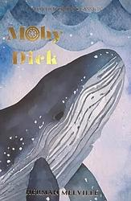
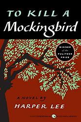

The Great Gatsby
by F. Scott Fitzgerald

The Great Gatsby is a 1925 novel by American writer F. Scott
Fitzgerald. Set in the Jazz Age on Long Island, near New York City,
the novel depicts first-person narrator Nick Carraway's interactions
with Jay Gatsby, a mysterious millionaire obsessed with reuniting with
his former lover, Daisy Buchanan.
Moby Dick
by Herman Melville

Moby-Dick; or, The Whale is an 1851 epic novel by American writer
Herman Melville. The book is centered on the sailor Ishmael's
narrative of the maniacal quest of Ahab, captain of the whaling ship
Pequod, for vengeance against Moby Dick, the giant white sperm whale
that bit off his leg on the ship's previous voyage. A contribution to
the literature of the American Renaissance, Moby-Dick was published to
mixed reviews, was a commercial failure, and was out of print at the
time of the author's death in 1891. Its reputation as a Great American
Novel was established only in the 20th century, after the 1919
centennial of its author's birth. William Faulkner said he wished he
had written the book himself, and D. H. Lawrence called it "one of the
strangest and most wonderful books in the world" and "the greatest
book of the sea ever written". Its opening sentence, "Call me
Ishmael", is among world literature's most famous.
To Kill a Mockingbird
by Harper Lee

To Kill a Mockingbird is a 1960 Southern Gothic novel by American
author Harper Lee. It became instantly successful after its release;
in the United States, it is widely read in high schools and middle
schools. To Kill a Mockingbird won the Pulitzer Prize a year after its
release, and it has become a classic of modern American literature.
The plot and characters are loosely based on Lee's observations of her
family, her neighbors and an event that occurred near her hometown of
Monroeville, Alabama, in 1936, when she was ten.